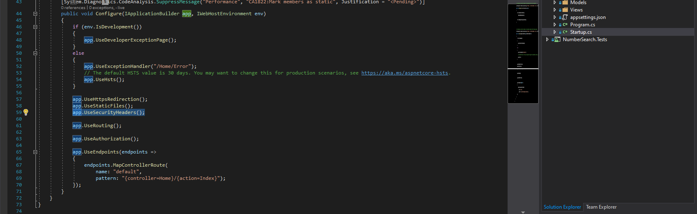

Adding Security Headers in ASP.NET Core 3.1 MVC Web App
Last week I was inspired by this post from Scott Hanselman to benchmark the performance of an application I developed called Number Search. This web app is written in ASP.NET Core 3.1 using the MVC template and it serves to help customer’s find and purchase phone numbers.
Initially it received an ‘F’ grade when I ran it through the SecurityHeaders.com benchmark. This wasn’t the result I was looking for. Luckily, the solution is wildly simple.
NetEscapades.AspNetCore.SecurityHeaders is a great little NuGet package that handles this problem. I added it to my MVC project and then inserted just a single line into the Startup.cs file: app.UseSecurityHeaders();
Now Number Search gets an ‘A’ grade on the same benchmark, and I’m quite pleased.